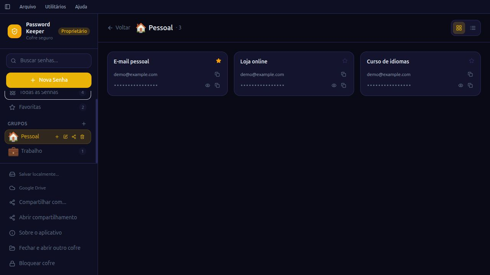
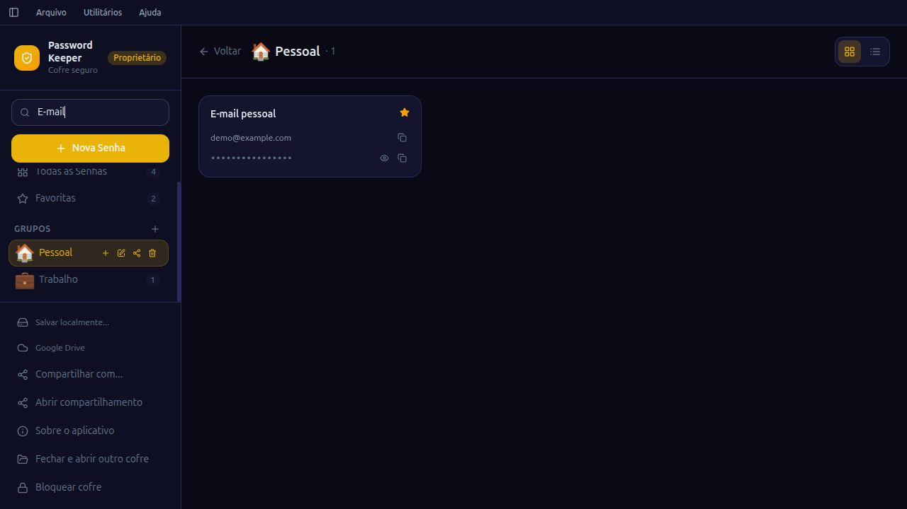

Como organizar suas senhas com o Password Keeper
Se seus acessos estão espalhados entre anotações, mensagens e planilhas, comece organizando poucas contas. Um gerenciador de senhas reúne nome da conta, usuário, senha e endereço do site em um cofre. No Password Keeper, esse cofre é um arquivo criptografado protegido por uma senha mestra.
Este guia mostra um primeiro uso com dados fictícios. Não envie senhas reais para comentários, formulários de suporte ou redes sociais.
1. Baixe o instalador para seu sistema
Na página de downloads do Password Keeper, escolha Windows, macOS, Linux ou Android. No Windows x64, o EXE é a opção inicial. No Mac, confira se seu processador é Apple Silicon ou Intel. No Linux, há AppImage, DEB e RPM. No Android, o arquivo é um APK para instalação manual; não há versão para iPhone nesta página.
Os arquivos são distribuídos pelas releases oficiais no GitHub. Windows e macOS podem apresentar avisos relacionados a assinatura ou notarização. No Android, a instalação manual exige autorização da fonte escolhida. Confira a procedência antes de instalar. Se não se sentir confortável, consulte o projeto e peça ajuda.
2. Crie um cofre e escolha sua senha mestra
A senha mestra desbloqueia o arquivo do cofre. Escolha uma senha longa e diferente das usadas em seus outros serviços. No desktop, escolha onde salvar o arquivo .keep ao criar o cofre.
Para conhecer o aplicativo, cadastre primeiro uma conta fictícia. Assim você pode experimentar os campos e a navegação antes de guardar credenciais reais.
3. Separe contas pessoais e de trabalho
Crie grupos como Pessoal, Trabalho e Estudos. Ao adicionar uma credencial, use um nome que você reconheça, informe usuário, senha e URL, e escolha seu grupo. Os favoritos ajudam a destacar os acessos usados com frequência.

Organizar uma senha não a troca no serviço de origem. Se você gerar uma senha nova pelo aplicativo, também precisa atualizar a senha na conta correspondente. Use senhas diferentes entre serviços e ative a autenticação em duas etapas onde estiver disponível.
4. Encontre uma conta pela busca
Digite o nome da conta no campo de busca. As senhas ficam ocultas na lista. Você pode consultar os detalhes ou copiar o acesso quando precisar. Nunca use computadores compartilhados ou dispositivos que você não controla para abrir seu cofre sem avaliar os riscos.

5. Mantenha backup do seu arquivo
Guarde cópias de segurança do arquivo .keep em um local protegido. Perder o dispositivo ou o arquivo sem backup pode impedir o acesso às credenciais. Uma cópia do arquivo continua exigindo a senha correta para ser desbloqueada.
O Google Drive é opcional. Você pode começar mantendo o cofre local e conectar o serviço depois, caso queira sincronizar o arquivo criptografado entre dispositivos. Sincronização e backup têm papéis diferentes: uma alteração indesejada também pode ser sincronizada.
Conheça o projeto e conte onde encontrou dificuldade
O código e a documentação do Password Keeper são públicos. Isso permite examinar a implementação; não representa uma certificação ou garantia de segurança absoluta.
Para relatar um problema ou sugerir uma melhoria, informe a versão, o sistema e os passos para reproduzir. Remova informações pessoais de capturas e nunca anexe o cofre ou suas senhas.